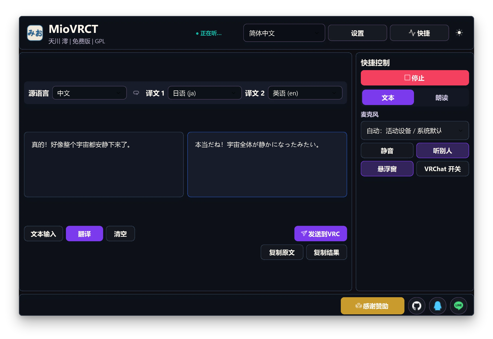
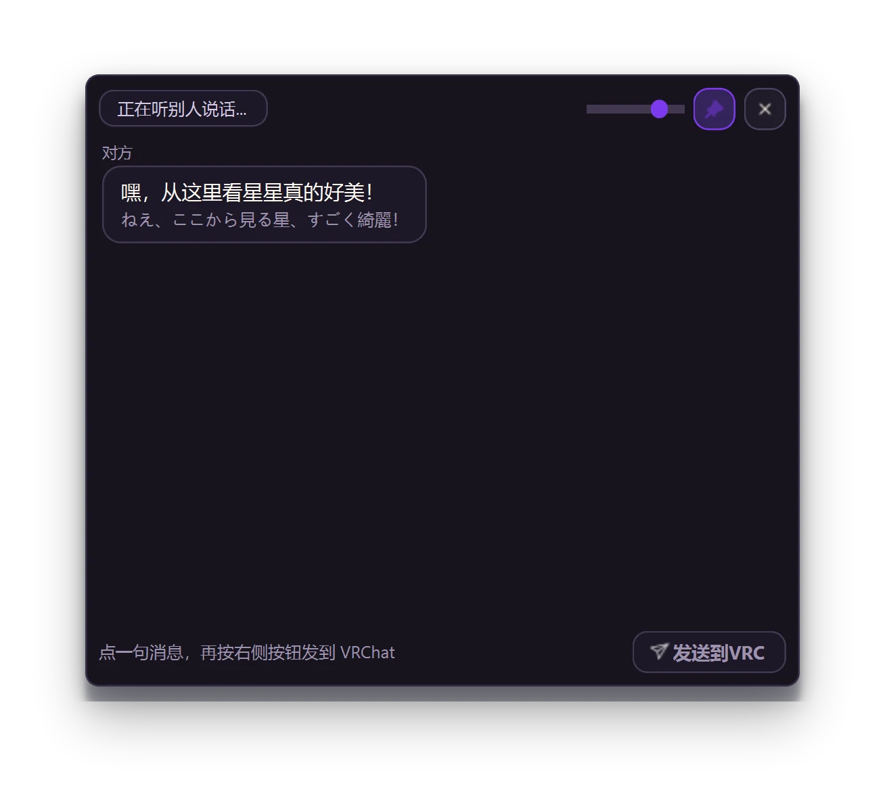
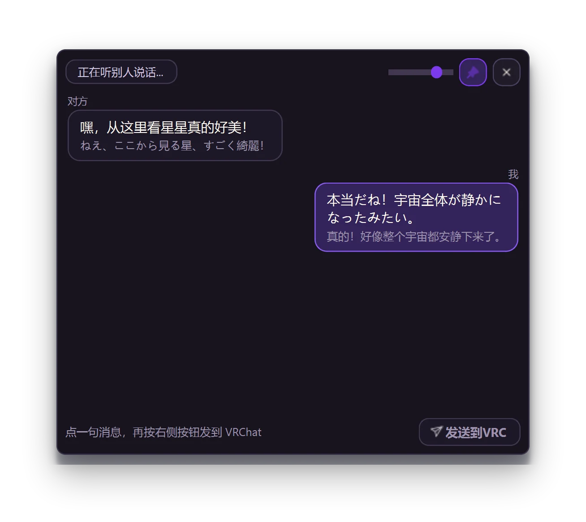
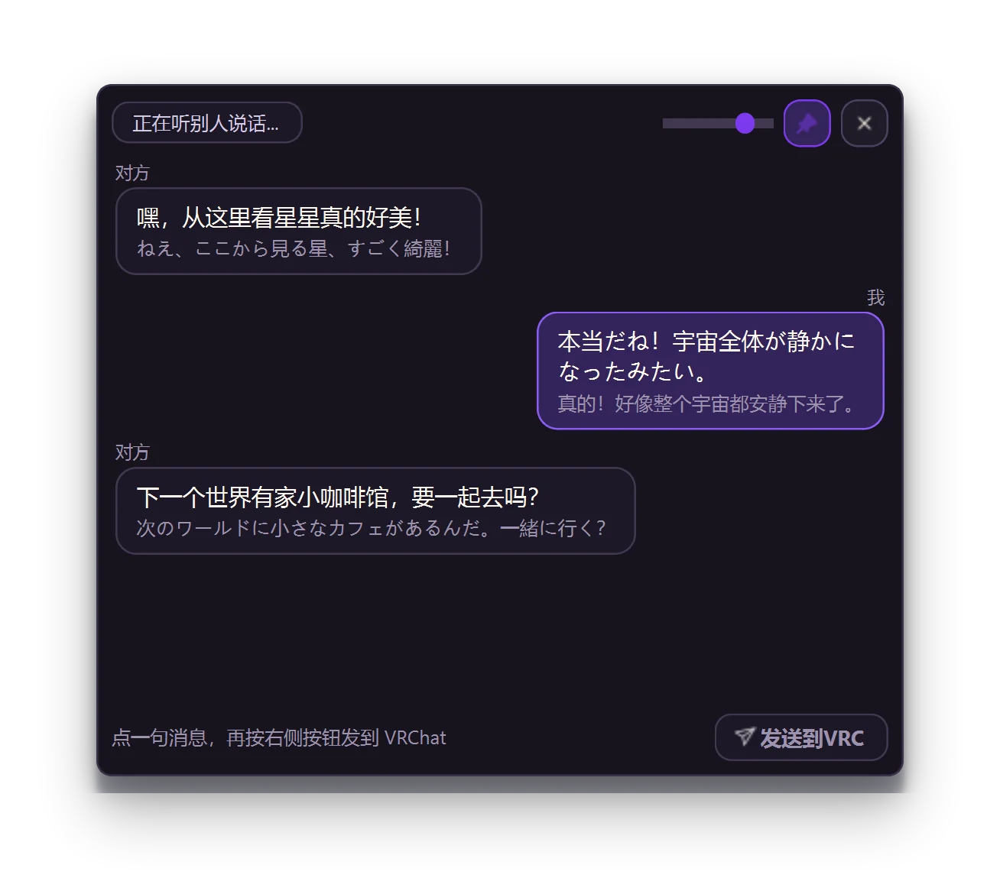
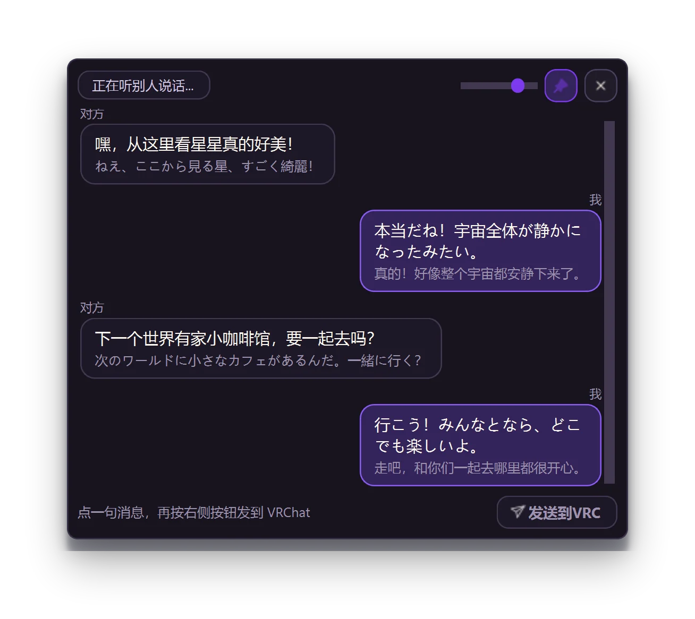

01 / 06
实时互译
你说中文，聊天框就能显示对方的语言。对方说的话，也能实时译回中文，来回聊天都跟得上。
麦克风 → 对方的语言 · 对方的声音 → 你的语言
说你的语言，聊同一个世界。
你说的话，译成对方能读懂的聊天框文字；对方的声音，也能实时译回你的语言。
没有项目自有云服务，在线服务由你选择。





功能
把翻译放在顺手的地方，让注意力留给眼前的人。
你说中文，聊天框就能显示对方的语言。对方说的话，也能实时译回中文，来回聊天都跟得上。
麦克风 → 对方的语言 · 对方的声音 → 你的语言
打开悬浮窗，把翻译留在游戏旁边。窗口大小和透明度都能调；看对方的译文，也能确认自己的话有没有识别对。
少占一点屏幕，多留一点空间。

戴着头显，也能直接看到译文。用控制器射线操作 Mio 面板，还可以让 Mio 随 SteamVR 一起启动。
字幕跟着你，聊天不用切回桌面。
抬起手腕，回看双方刚刚说过的话。原文和译文放在一起，不用摘下头显，也不用担心漏看一句。
本次会话的双向记录，抬手就能看。
用双手控制器框住世界里的路牌、菜单或说明，拍下来就能翻译。照片、文字和二维码，按需要切换。
看不懂的地方，框一下。
用喜欢的 AI 声音读出译文，支持 VOICEVOX 和云端语音等服务。搭配 MixLine 虚拟麦克风，让游戏里的人也能听到；不想开口时，打字也能聊。
你的表达，也可以有另一种声音。
在中国大陆，Edge 接口不可用时，自动切换到 Bing 官网路线（cn.bing.com）。
可以选本地语音识别。用在线服务时，不必先下载本地模型。
简体中文、English、日本語、Русский、한국어，换成熟悉的语言再开始。
VR 记录和书签不做永久保存；图片只有在你点击保存后才写入本地。
下载 Windows x64 安装包，按提示安装，然后打开程序。
在设置里选择服务、输入语言和目标语言。免费选项不用填密钥，也能开始用。
在 VRChat 中打开 Options → OSC → Enable。MioVRCT 设置里的“发送翻译到聊天框”默认已开启。
把朗读声音送进 MixLine 虚拟麦克风，再在游戏里选择这个麦克风。不需要朗读可以跳过。
在设置里开启头显功能。建议同时打开“随 SteamVR 启动”，下次进 VR 就能一起启动。
常见问题
MioVRCT 现在会自动回退到 Bing 官网路线。如果仍然失败，检查代理或 VPN 的设置，或者换一个翻译服务再试。
部分电脑会遇到 SteamVR 端无响应的问题。MioVRCT 会继续翻译，并显示“SteamVR 没有响应”。建议打开“随 SteamVR 启动”。
确认 Steam、SteamVR、VRChat 没有设置为管理员运行或兼容模式；逐个禁用 SteamVR 附加组件，并关闭 RTSS、录屏工具等叠加层注入程序后再试。
先在 VRChat 中开启 Options → OSC → Enable。点 Mio 主窗口里的“VRChat 开关”，可以查看分步说明。
用 MixLine 把 MioVRCT 的朗读声音送进虚拟麦克风，然后在 VRChat 的麦克风设置里选中它。
用在线服务不需要下载本地模型。想用本地语音识别或本地语音时，再到设置里按需下载。
项目没有自有云服务。在线语音识别、翻译和 AI 朗读会把必要内容发给你选择的服务商，按该服务商的政策处理。VR 记录只在本次会话保留。
下载
MioVRCT v1.6.4：熟悉的经典界面回来了，并包含 1.6 以来的全部修复。桌面和 SteamVR，都准备好了。
安装包不捆绑本地语音模型，使用时可在设置里按需下载。
官方识别词典和更新文件。只有你手动打开或更新时才会访问。
软件里的“更新词典”会从这里获取官方词典。